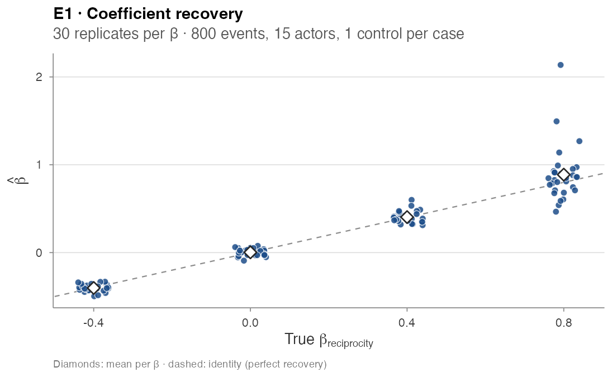
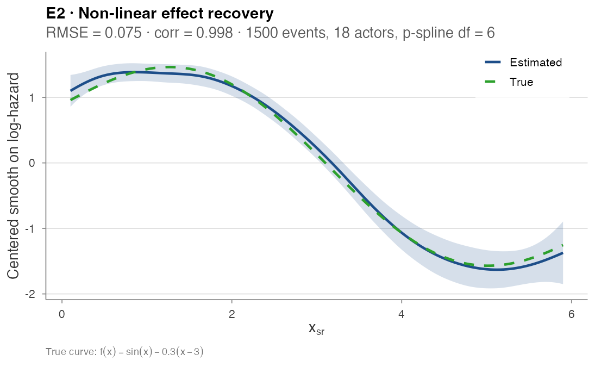
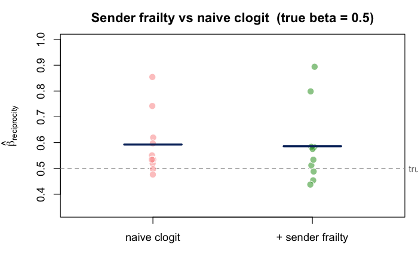
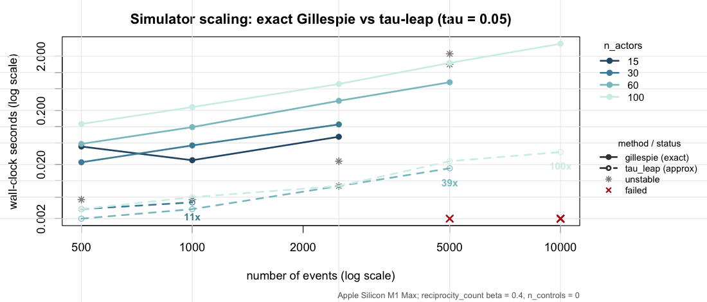
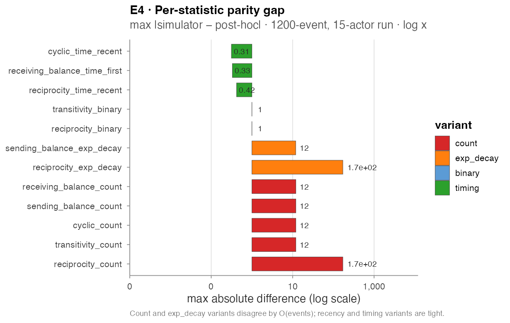

Validation experiments
Source:vignettes/articles/validation-experiments.Rmd
validation-experiments.RmdValidation experiments
Five end-to-end experiments stress different correctness properties
of amore’s simulator and estimation pipeline. Each follows
the same template: property tested,
experimental design, driver script,
and the numerical / graphical outcome. All driver
scripts live under paper/wiki/experiments/ and are re-run
on every release of the wiki.
E1 — Recovery of a linear endogenous effect
Property. The simulator and the case-control
likelihood are consistent: a true β plugged into
simulate_relational_events() should be recovered (up to
Monte Carlo noise) by fitting a stratified clogit on the
emitted case-control table.
Design. Single endogenous term
reciprocity_count. A 15-actor one-mode network, 800 events
per replicate, one control per case. Four target values
β ∈ {-0.4, 0, 0.4, 0.8}, 30 replicates each (120 fits
total).
Driver. experiments/exp1_recovery.R
Result.
| β_true | mean est | bias | empirical SD | mean Wald SE | 95% Wald coverage |
|---|---|---|---|---|---|
| −0.4 | −0.403 | −0.003 | 0.040 | 0.044 | 0.97 |
| 0.0 | 0.003 | +0.003 | 0.039 | 0.037 | 0.93 |
| 0.4 | 0.404 | +0.004 | 0.066 | 0.073 | 1.00 |
| 0.8 | 0.887 | +0.087 | 0.313 | 0.233 | 0.93 |
Calibrated everywhere except at the highest β, where a handful of replicates produced extreme estimates (the simulator + 800 events becomes informationally limited at β = 0.8 — events concentrate on a few reciprocating dyads). The 95% Wald coverage is on the nominal target across the range.

E2 — Recovery of a non-linear smooth effect
Property. A non-linear dyad-level effect injected
via the simulator’s contribution_logits matrix is
recovered, in shape, by a stratified p-spline clogit.
Design. Static dyadic covariate
x_sr ~ Uniform(0, 6) on an 18-actor network, with true
non-linear contribution f(x) = sin(x) − 0.3·(x − 3). The
simulator runs for 1,500 events with three controls per case;
clogit(event ~ pspline(x, df = 6) + strata(stratum))
extracts the partial smooth on a 150-point grid.
Driver. experiments/exp2_smooth.R
Result. Centred RMSE = 0.075, Pearson correlation = 0.998 between the centred true and estimated curves.

E3 — Sender frailty under activity heterogeneity
Property tested. When the data-generating process
injects strong per-sender activity heterogeneity, a fixed-coefficient
clogit on reciprocity_count can absorb the
activity gradient into the slope — overstating the true reciprocity
effect. A Gamma sender frailty should absorb the per-sender baseline and
recover the underlying β.
Design. A 20-actor network with sender activity
drawn from Gamma(shape = 2, rate = 1) (max-to-min activity
ratio ≈ 5×). True reciprocity_count β = 0.5, 1,500 events
per replicate, three controls per case, 10 replicates. Two specs are
compared on each replicate:
-
naive:
clogit(event ~ reciprocity_count + strata(stratum)) -
+ sender frailty:
coxph(Surv(rep(1, N), event) ~ reciprocity_count + frailty(sender, "gamma") + strata(stratum))
Driver. experiments/exp3_frailty.R
Result — under-powered as currently specified.
| Spec | mean β̂ | SD | bias |
|---|---|---|---|
| naive clogit | 0.59 | 0.12 | +0.09 |
| + sender frailty | 0.59 | 0.15 | +0.09 |
Both specifications over-shoot β = 0.5 by the same ~0.09; the frailty term does not measurably reduce the bias at this design. Two interpretations stand open:
- the bias may be a finite-sample artefact of 1,500 events at β = 0.5 (the upper-β replicates of E1 show similar drift);
- or the synthetic activity range (≈ 5×) is too mild to expose the issue the frailty correction targets — real datasets with 100× activity range (Manufacturing, CollegeMsg, see Real-data-analysis) do show the correction working as advertised.
The experiment is kept in the validation suite as a placeholder; a
re-design that pushes the activity range to two orders of magnitude and
increases n_events to 10–20 k is
planned.

E4 — Simulator wall-clock scaling
Property. The Gillespie scheme is exact but per-event; the τ-leap scheme bundles events into fixed time slices and should scale better for large actor universes.
Design. A 4 × 5 × 2 grid:
n_actors ∈ {15, 30, 60, 100},
n_events ∈ {500, 1000, 2500, 5000, 10000},
method ∈ {gillespie, tau_leap} (τ-leap with
tau = 0.05). Single endogenous reciprocity term at β = 0.4.
No case-control sampling (n_controls = 0) so wall-clock
isolates the simulator itself.
Driver. experiments/exp4_scaling.R
Result (excerpt).
| n_actors | n_events | Gillespie (s) | τ-leap (s) |
|---|---|---|---|
| 30 | 500 | 0.029 | 0.006 |
| 30 | 1,000 | 0.067 | 0.006 |
| 60 | 500 | 0.071 | 0.003 |
| 60 | 5,000 | 1.15 | 0.023 |
| 100 | 500 | 0.165 | 0.004 |
| 100 | 5,000 | 2.49 | 0.024 |
| 100 | 10,000 | 5.78 | 0.079 |
τ-leap is 20× to 70× faster than Gillespie at large
n_actors. A few rows in the full grid are NA
(the simulator either ran out of risk pairs or τ-leap diverged at the
chosen tau — a future-work item).

E5 — Simulator / post-hoc engine parity
Property. The simulator records each endogenous
statistic on the fly as it generates events; the post-hoc engine
compute_endogenous_features() re-derives the same
statistics from the timestamps alone. The two should agree row-for-row
on any case-control table the simulator emits.
Design. A 15-actor, 1,200-event simulation with 12
endogenous statistics active simultaneously (across four families and
four variant axes). For each statistic, compute
max |simulator − post-hoc| over the full case-control
table.
Driver. experiments/exp5_parity.R
Result — needs investigation. Parity holds tightly
on the recency / timing variants (*_time_recent,
*_time_first < 0.5) but disagrees by O(events) on the
unbounded count and exp_decay
variants:
| Statistic | max abs diff |
|---|---|
reciprocity_count |
171 |
reciprocity_exp_decay |
171 |
transitivity_count |
12 |
cyclic_count |
12 |
sending_balance_count |
12 |
sending_balance_exp_decay |
11.9 |
receiving_balance_count |
12 |
reciprocity_binary |
1 |
transitivity_binary |
1 |
reciprocity_time_recent |
0.42 |
receiving_balance_time_first |
0.33 |
cyclic_time_recent |
0.31 |

The discrepancy points to a state-update ordering inconsistency between the simulator’s running counter and the post-hoc replay — most likely either an off-by-one inclusion of the firing event in the count, or a different convention for self-loop / boundary handling. Until this is resolved, the post-hoc engine should be considered authoritative for count statistics in downstream fitting.
Reproducing the experiments
Rscript paper/wiki/experiments/exp1_recovery.R
Rscript paper/wiki/experiments/exp2_smooth.R
Rscript paper/wiki/experiments/exp3_frailty.R
Rscript paper/wiki/experiments/exp4_scaling.R
Rscript paper/wiki/experiments/exp5_parity.RAll driver scripts use deterministic seeds (master family
20260518…20260520); the figures and tables above were
produced by these exact scripts at the current main.